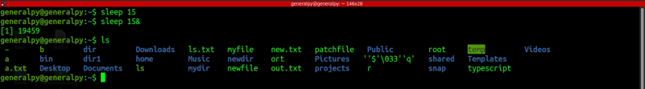
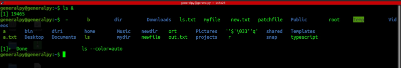
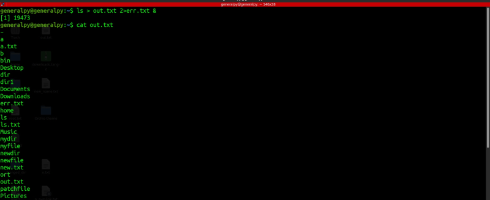

There are 2 types of processes :-
Foreground process : These are the process which run interactively and when started, any other process or command cannot be run in that terminal till the previous process is finished.
Sleep for 15 seconds. Terminal pause for 15 seconds, we cannot do anything.
We can provide input to foreground process during runtime.
Background Process : These are non interactive processes which are started by services or by users and we cano run other commands/processes in the same terminal even if a background process is running.

We can append a & at the end of any command to make it background process.
Note that even tho process runs in bg, its errors and output is stil shown in the terminal.

Since command is run in bg and non interactively, we can redirect output and errors into files.

When output is useless, we can redirect it to /dev/null which is a null device where content is discarded immediately.